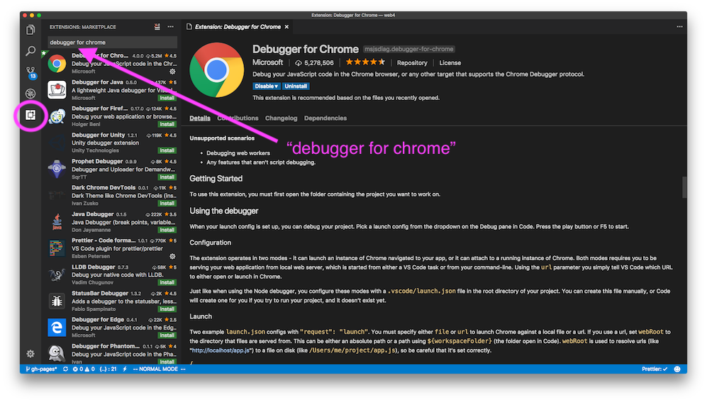
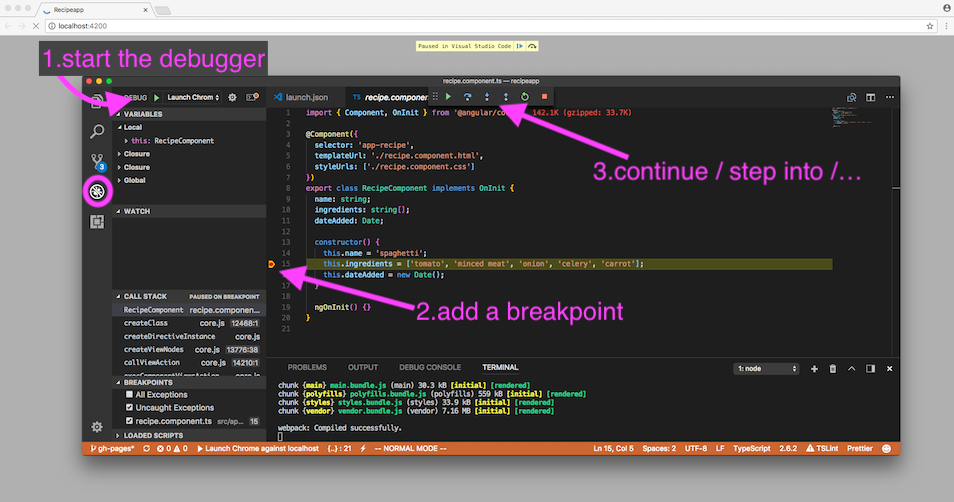

~$ ng new recipeapp
I chose 'No' routing and plain CSS
(routing comes in a few weeks, and nobody likes css so we don't do
that here)
~$ cd recipeapp ~/recipeapp$ ng serve
~/recipeapp$ ng generate component recipe
installing component CREATE src/app/recipe/recipe.component.css (0 bytes) CREATE src/app/recipe/recipe.component.html (25 bytes) CREATE src/app/recipe/recipe.component.spec.ts (628 bytes) CREATE src/app/recipe/recipe.component.ts (269 bytes) UPDATE src/app/app.module.ts (396 bytes)
src/app/recipe/recipe.component.ts
import { Component, OnInit } from '@angular/core';
@Component({
selector: 'app-recipe',
templateUrl: './recipe.component.html',
styleUrls: ['./recipe.component.css']
})
export class RecipeComponent implements OnInit {
constructor() { }
ngOnInit() {
}
}
src/app/app.component.html
<div style="text-align:center">
<h1>
Welcome to {{title}}!!
</h1>
</div>
<div>
<app-recipe></app-recipe>
</div>
src/app/recipe/recipe.component.ts
export class RecipeComponent implements OnInit {
name: string;
constructor() {
this.name = "spaghetti";
}
ngOnInit() {
}
}
src/app/recipe/recipe.component.html
<p>
recipe for {{name}}
<p>
let name: string;
const age: number = 15;
let cities: string[];
let postalcodes: Array<number>;
let recipe: Recipe;
let notThatUseful: any;
interface LabelledValue {
label: string;
}
class Recipe implements RecipeInterface {
private _name: string;
readonly maximumSteps = 12;
constructor() {
this._name = 'spaghetti';
this.ingredients = ['tomato', 'minced meat'];
}
get name(): string { return this._name; }
set name(name: string) { this._name = name; }
public printDirections(labeled?: LabelledValue) {
console.log(labeled.label);
}
}
let rec = new Recipe();
rec.name = 'risotto';
class Recipe {
private _name: string;
constructor(private _name: string) {
this._name = name;
}
}
src/app/recipe/recipe.component.ts
export class RecipeComponent implements OnInit {
name: string;
ingredients: string[];
constructor() {
this.name = "spaghetti";
this.ingredients = ["tomato", "onion", "celery",
"carrot", "minced meat"];
}
ngOnInit() {
}
}
src/app/recipe/recipe.component.html
<p>
recipe for {{name}}
</p>
Ingredients:
<ul>
<li *ngFor="let ingredient of ingredients">
{{ingredient}}
</li>
</ul>
src/app/recipe/recipe.component.ts
export class RecipeComponent implements OnInit {
name: string;
ingredients: string[];
dateAdded: Date;
constructor() {
this.name = 'spaghetti';
this.ingredients = ['tomato', 'minced meat'];
this.dateAdded = new Date();
}
}
src/app/recipe/recipe.component.html
<p>
recipe for {{name}},
added on {{dateAdded | date: 'dd/MM/yyyy': 'longDate'}}
// Wed Jan 03 2018 21:46:00 GMT+0100 (CET)
// Jan 3, 2018
// 03/01/2018
// January 3, 2018
</p>
| TitleCasePipe | Transforms Text To Title Case |
| CurrencyPipe | € 45.10 / USD 1000 / $15 |
| PercentPipe | 26% |
| DecimalPipe | 3.14 / 03.14000 |
| JsonPipe | { properly formatted json object } |
| ... and many more | |
~/recipeapp$ ng generate component ingredient // which can be written shorter as well ~/recipeapp$ ng g c ingredient
src/app/ingredient/ingredient.component.ts
import { Component, OnInit, Input} from '@angular/core';
@Component({
selector: 'app-ingredient',
templateUrl: './ingredient.component.html',
styleUrls: ['./ingredient.component.css']
})
export class IngredientComponent implements OnInit {
@Input() name : string;
constructor() { }
ngOnInit() {
}
}
src/app/ingredient/ingredient.html
<p>
ingredient works!
</p>
should become
src/app/ingredient/ingredient.html
{{name}}
src/app/recipe/recipe.component.html
<p>
recipe for {{name}}
</p>
Ingredients:
<ul>
<li *ngFor="let ingredient of ingredients">
<app-ingredient [name]="ingredient"></app-ingredient>
</li>
</ul>
visual studio code has a lot of (third party) extensions, we'll use the Debugger for Chrome to help us debug our Angular application
 .vscode/launch.json
{
"version": "0.2.0",
"configurations": [
{
"type": "chrome",
"request": "launch",
"name": "Launch Chrome against localhost",
"url": "http://localhost:8080",
"url": "http://localhost:4200",
"webRoot": "${workspaceFolder}"
}
]
}
make sure the app is running, add a breakpoint and start your debug proces
